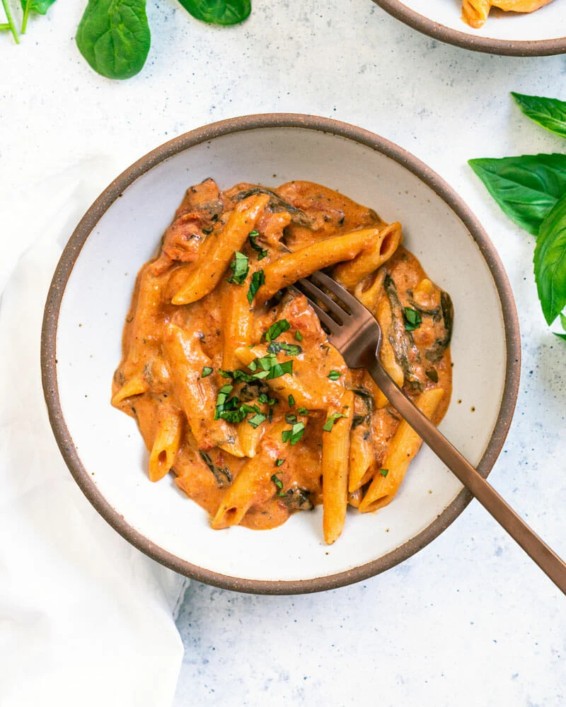

Creamy instant pot pasta
Discription
Creamy Instant Pot pasta with a
marinara sauce mixed with creamy goat cheese
Ingredients
- 1 1/2 cups water
- 28 ounce can crushed fire roasted tomatoes
- 2 tablespoons extra virgin olive oil
- 1 table spoon Balsamic vinegar
- Spices: 2 teaspoons garlic powder,
1 teaspoon dried oregano, 1 teaspoon salt
- 2 cups baby or chopped spinach
- 8 fresh basil leaves
- 8 ounces penne pasta
- 4 ounce goat cheese log
Steps
- add water, tomatoes, olive oil, balsamic vinegar,
glaric powder, oregano, salt, spinach, fresh basil
leaves and penne to the instant pot. Stir until all combined.
- Cook on high pressure for 5 minutes; keep in mind that it
takes about 10 minutes for the pot to "preheat" or come up
to the correct pressure before cooking start
-
vent left over steam and open the lid, crumble goat cheese
in and stir, sauce will thicken as it cools.
Back to recipes